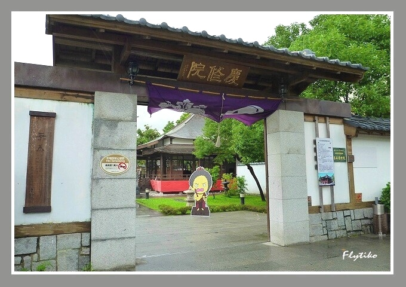

Hualien
Qingshui Cliff 清水斷崖
"Qingshui Cliff" is located on the east side of Qingshui Mountain. It
is a famous tourist attraction on the Suhua Highway from Heren to
Chongde. Qingshui Cliff is a great sight on the east coast of Taiwan,
especially the sea cliffs southeast of Qingshui Mountain. The steep
cliff faces the sea for five kilometers. , The sea and the sky are the
same color, quite spectacular. In the hiking area along the scenic
road of the recreational base of the Chongde Tunnel, there are stone
monuments and viewing platforms. This is also an excellent viewing
spot. You can admire the huge fault cliffs formed by the steep cliffs
and steep terrain. Located at the intersection of mountains and seas,
the coastal terrain has experienced many plate collisions and
disappearances, resulting in today's rich and special geological
landscapes such as cliffs, valleys, and sea caves. The Qingshui Cliff
is very majestic and majestic. It has been standing on the Pacific
Ocean on the east coast of Taiwan for thousands of years. The
beautiful and majestic scenery has also fascinated and lingered
tourists.
「清水斷崖」位於清水山東側，是蘇花公路和仁到崇德路段著名的旅遊景點，清水斷崖是台灣東岸的一大奇景，尤其清水山東南海崖，險峻大絕壁臨海面長達五公里，海天一色、相當壯觀。在崇德隧道北口休憩據點景觀道路沿線的徒步區，設有石碑與觀景台，這裡也是絕佳的眺景地點，可欣賞險仞峭壁和陡峻地勢所連成的巨大斷層石崖，由於位處山海交接地帶，海岸地形歷經多次板塊碰撞及隱沒，而造成如今斷崖、溪谷、海蝕洞等豐富特殊的地質景觀。清水斷崖氣勢十分雄偉壯觀，千萬年來矗立於台灣東岸太平洋上，綺麗亦磅礡的美景風光也讓遊客著迷與流連不已。
Hualien Ji-An Shrine 花蓮慶修院
"Hualien Ji-An Shrine" is located in Ji'an Township, Hualien County. This is a Japanese-style temple built in 1917 and is currently classified as a third-class monument. The predecessor of Keishuin was the Yoshino Buddhism Institute of the Takano Sect of Shingon Buddhism of Japan. In addition to being the main religious center for Japanese in Taiwan, it also had multiple functions such as medical care, lecture rooms, and legal services. Keishuin enshrines King Fudo Myoshi and King Bishamon, and travels to 88 temples in Shikoku, Japan following the rules of Master Kukai. Please return to the 88 stone statues of ancient Buddhas, and erect the stone stele of "The Mantra of Light a Million Times". These early Buddha statues and ruins, courtyard buildings and historical furnishings still retain their old time and appearance. The surrounding ponds, bridges, flowers and trees are all maintained in a Japanese courtyard style, and the ancient and beautiful Buddhist temples and monuments are distributed in Edo, Japan. The style of the times is very distinctive. 「慶修院」位於花蓮縣吉安鄉，這是建於西元1917年的日式寺院，目前已被列為三級古蹟。慶修院前身是日本真言宗高野派吉野布教所，當時除了是日人在台最主要的宗教信仰中心，還具備了醫療、講習課室及法事服務等多項功能。慶修院奉祀不動明王、毘沙門天王，並循空海大師之遺規，行遍日本四國88所寺廟， 請回88尊古佛石像，並矗立「光明真言百萬遍」石碑。這些早期的佛像與遺址、院內建築和歷史陳設等都仍保留著昔日時光與樣貌，週邊的池塘、小橋、花草樹木等皆是維持日式的庭院風格，古老美麗的佛寺古蹟散發日本江戶時代風格，十分具有特色。